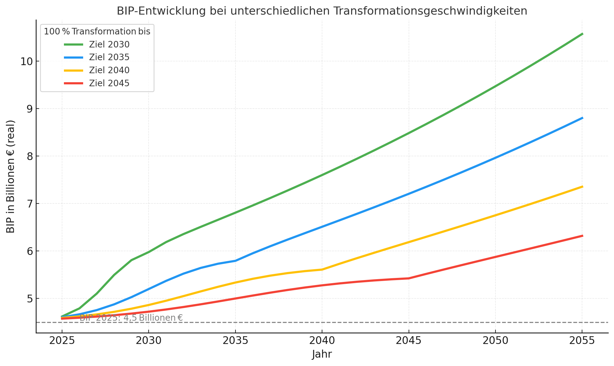
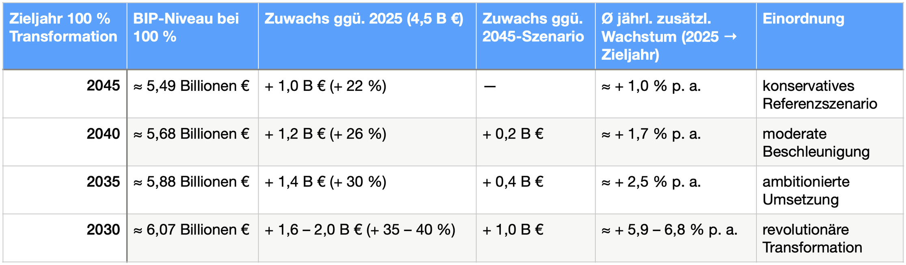

Deutschland steckt wirtschaftlich fest. Regierung, CDU und das Ifo-Institut sprechen über Bürokratieabbau, über Nullwachstum, über Sozialausgaben - aber niemand spricht über den größten Wachstumstreiber unserer Zeit: die schnelle Transformation unserer Energie- und Wirtschaftssysteme.
Transformation ist kein Kostenblock - sie ist der Wachstumsmotor
In der öffentlichen Debatte wird Transformation häufig als Belastung gesehen: als teuer, als riskant, als Bremse. Tatsächlich ist sie das Gegenteil - ein struktureller Produktivitätsschub, der das deutsche BIP dauerhaft um rund 22 % anheben kann, wenn die vollständige Umstellung auf erneuerbare Energien bis 2045 gelingt.
Das entspricht etwa 1 Billion Euro zusätzlichem Wohlstand bis 2045 - nicht als jährlicher Zuwachs, sondern als neues, stabiles Wohlstandsniveau.
Doch das ist nur das konservative Szenario. Denn je schneller die Transformation gelingt, desto größer wird der Effekt. Bis 2035 oder gar 2030 kann das BIP um bis zu 35 % steigen - also fast doppelt so großer Wohlstandsgewinn.
Der zweite Effekt: Wer früher transformiert, wächst länger und stärker
Mit einer frühen Transformation endet das Wachstum nicht - es beginnt erst richtig. Denn wer früh umstellt, profitiert dauerhaft von:
günstigerer Energie und sinkenden Betriebskosten,
steigender Wettbewerbsfähigkeit im Export,
besserer Gesundheit und Produktivität,
und stabileren Staatsfinanzen, weil die Folgekosten von Klima, Krankheit und Krisen massiv sinken.
Verzögerung bedeutet dagegen das Gegenteil: steigende Klimafolgekosten, verpasste Märkte, verlorene Innovationsdynamik.
Je später wir transformieren, desto flacher verlaufen die Wachstumsraten auch nach der Umstellung. Denn Märkte, Technologien und Lernkurven sind dann längst von anderen besetzt.


Systemisch gedacht - was Ifo & Regierung übersehen
Das Ifo-Institut rechnet mit veralteten Modellen: linear, statisch, angebotsfixiert. Transformation erscheint dort als Kostenblock, nicht als Systemsprung.
Doch Wirtschaft funktioniert nicht linear. Sie ist ein lernendes, rückgekoppeltes System.
Wer früher transformiert, verschiebt nicht nur den Zeitpunkt, sondern das gesamte Gleichgewicht: Energiepreise, Investitionsströme, Innovationspfade, Exportstrukturen - alles verändert sich nicht additiv, sondern multiplikativ.
Deshalb ist Zeit kein neutraler Faktor, sondern ein Wachstumshebel. Sie entscheidet, ob wir exponentielle Verluste erzeugen - oder exponentielles Wachstum.
Zukunft durch Systemverstehen
Während CDU und Wirtschaftsministerin Reiche über Nullwachstum und Sozialkürzungen diskutieren, liegt direkt vor uns der größte Wohlstandshebel seit dem Wirtschaftswunder.
Transformation ist kein Risiko - sie ist der Beginn einer neuen Wachstumsphase.
Wer früher transformiert, verschiebt nicht nur den Zeitpunkt - sondern das gesamte Gleichgewicht.